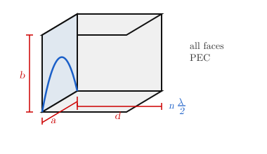

7 Cavities
In certain cases high field selectivity is required. Various types of resonators can be used for this purpose.
7.1 Series and Parallel RLC Resonators
A series RLC resonator has impedance \(Z_{in} = R + j\omega L + \frac{1}{j\omega C}\). \(LC\) determines \(\omega_0\), \(R\) determines the dissipation factor.
\[Z_{in} \big|_{\omega_0} \in \mathbb{R} \tag{7.1}\]
At resonance, \(W_m\) and \(W_e\) will be equal and resonate between one form and the other:
\[\omega_0^2 = \frac{1}{LC} \tag{7.2}\]
\[W_m = \frac{1}{2} L \bar{I}^2, \qquad W_e = \frac{1}{2} C V^2\]
For the parallel RLC resonator, \(Y_{in} \big|_{\omega_0} \in \mathbb{R}\), \(\omega_0 = \frac{1}{\sqrt{LC}}\):
The resistive/dissipative elements affect the bandwidth, due to parasitics of \(L\) and \(C\). But there might be other dissipative factors.
\(R\) (or \(G\)) determines bandwidth; \(L\) and \(C\) set \(\omega_0\). Real components have parasitic resistance, so \(Q\) is always finite.
7.2 Cavity — Electromagnetic Bulk Resonator
A cavity is an electromagnetic bulk resonator. e.g. a section of WR-90, PEC terminated at both ends — all faces of the prism are PEC.

WR-90: \(a = 0.9''\), \(b = 0.4''\) \(\Rightarrow\) \(\text{TE}_{10}\) mode, for \(\omega > \omega_{c_{10}}\).
WR-90 is a standard rectangular waveguide band: 8.2–12.4 GHz (X-band).
\(d = ?\) \(\rightarrow\) for resonance: \(d = p\dfrac{\lambda}{2}\), giving modes \(\text{TE}_{10p}\) (generally \(\text{TE}_{nmp}\)).
\(\therefore\) \(\omega_{nmp}\) are discrete frequencies.
\[Q = \frac{W_s}{P_d} \cdot \omega_0 = \frac{\omega_0}{\Delta\omega} \tag{7.3}\]
e.g. cavity wavemeter (cylindrical waveguide) — \(d\) is tunable.
e.g. dielectric resonator oscillator (DRO) — small disc of high \(\varepsilon_r\) material (\(\varepsilon_r \sim 100\)). No PEC, all dielectric. The field \(|E|\) is confined inside the disc and decays rapidly with radius \(r\).
DROs are widely used in oscillator circuits due to their high \(Q\), small size, and temperature stability.
7.3 Field Analysis
We will consider a PEC wall RWG. Nevertheless this analysis method is applicable to any type. Consider a WG section with cross section dimensions \(a\), \(b\) (see Figure 7.3).
For \(\text{TE}_{nm}\) modes, the fields are:
\[H_{z,nm} = A_{nm} \cos\!\left(\frac{n\pi}{a}x\right)\cos\!\left(\frac{m\pi}{b}y\right) e^{\mp j\beta_{nm} z} \tag{7.4}\]
where \(+z\) is forward propagation and \(-z\) is backward propagation.
\[H_{x,nm} = \mp j\,\frac{\beta_{nm}}{k_{c_{nm}}^2}\cdot A_{nm}\frac{n\pi}{a}\sin\!\left(\frac{n\pi}{a}x\right)\cos\!\left(\frac{m\pi}{b}y\right)e^{\mp j\beta_{nm}z} \tag{7.5}\]
\[H_{y,nm} = \mp j\,\frac{\beta_{nm}}{k_{c_{nm}}^2}\cdot A_{nm}\frac{m\pi}{b}\cos\!\left(\frac{n\pi}{a}x\right)\sin\!\left(\frac{m\pi}{b}y\right)e^{\mp j\beta_{nm}z} \tag{7.6}\]
The dominant mode is \(\text{TE}_{10}\):
\[H_{z,10} = A_{10}\cos\!\left(\frac{\pi}{a}x\right)e^{\mp j\beta_{10}z}\]
In the cavity there will be \(+\) and \(-\) propagating waves:
\[H_z = H_1\cos\!\left(\frac{\pi}{a}x\right)e^{+j\beta_{10}z} + H_2\cos\!\left(\frac{\pi}{a}x\right)e^{-j\beta_{10}z}\]
\[H_y = 0\]
\[H_x = j\frac{\beta_{10}}{k_{c_{10}}^2}\cdot\frac{\pi}{a}\left(H_1 e^{+j\beta_{10}z} - H_2\, e^{-j\beta_{10}z}\right)\sin\!\left(\frac{\pi}{a}x\right)\]
\[k_{c_{10}} = \frac{\pi}{a}\]
The wave impedance relation gives:
\[\frac{E_y}{H_x} = -Z_{\text{TE}} = -\frac{k}{\beta}\,Z_0\]
\[E_y = -jk_0\,\frac{a}{\pi}\,Z_0\left(H_1 e^{+j\beta_{10}z} + H_2 e^{-j\beta_{10}z}\right)\]
\(H_1\) and \(H_2\) are unknowns. Consider a section of length \(d\). At \(z=0\) and \(z=d\), PEC boundary conditions must be satisfied:
\[E_y(z=0) = 0, \qquad E_y(z=d) = 0 \quad \Leftrightarrow \quad \hat{a}_n \times \mathbf{H}\big|_{z=0,d} = 0\]
At \(z=0\): \(\hat{a}_n = +\hat{a}_z\), so \(H_z(z=0) = H_1 + H_2 = 0 \Rightarrow H_1 = -H_2\)
At \(z=d\): \(\hat{a}_n = -\hat{a}_z\)
\[H_1\, e^{+j\beta_{10}d} + H_2\, e^{-j\beta_{10}d} = 0\]
\[H_1\!\left(e^{+j\beta_{10}d} - e^{-j\beta_{10}d}\right) = 0\]
\[-2j\,H_1\sin\beta_{10}d = 0 \quad \Rightarrow \quad \beta_{10}d = p\pi, \quad p = 1, 2, 3, \ldots\]
Since \(\beta = \dfrac{2\pi}{\lambda_g}\):
\[d = p\,\frac{\lambda_g}{2}, \quad p = 1,2,3,\ldots \tag{7.7}\]
From the dispersion relation \(\beta^2 = k^2 - k_c^2\):
\[\beta_{nm}^2 = \omega^2\mu_0\varepsilon_0 - \left(\frac{n\pi}{a}\right)^2 - \left(\frac{m\pi}{b}\right)^2 = \left(\frac{p\pi}{d}\right)^2\]
Setting \(\beta_{nm} = p\pi/d\) and solving for the resonant frequency:
\[\omega_0^2\mu_0\varepsilon_0 = \left(\frac{n\pi}{a}\right)^2 + \left(\frac{m\pi}{b}\right)^2 + \left(\frac{p\pi}{d}\right)^2 \quad \Rightarrow \quad \omega_{nmp} \tag{7.8}\]
Convention: \(d > a > b\), so \(\text{TE}_{101}\) is the dominant mode — the lowest resonant frequency for a PEC RWG cavity.
Choosing \(d > a > b\) ensures \(\text{TE}_{101}\) has the lowest \(\omega_{nmp}\), giving a clean single-mode operation near resonance.
As seen in Figure 7.4, \(\omega_{101}\) is the lowest resonant frequency, with higher-order modes \(\omega_{nmp}\) following at discrete intervals.
Swapping \(a\), \(b\), \(d\) changes nothing physically — only the labelling of modes.